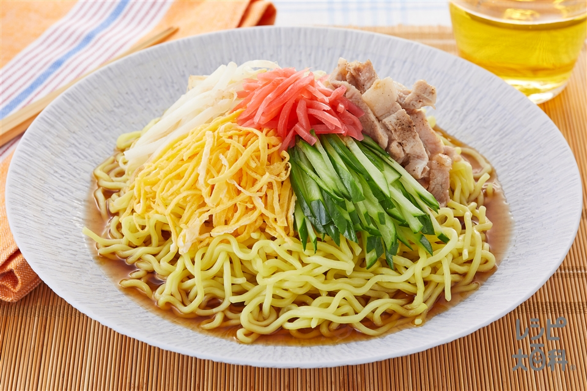
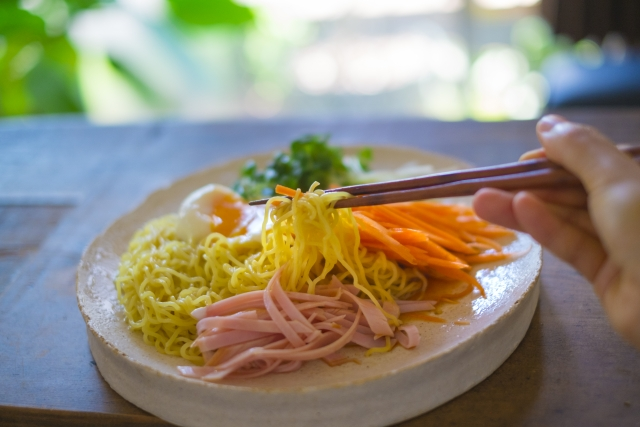

豚しゃぶときゅうりのごまだれ冷やし中華

情報
豚肩ロースの柔らかさと旨味、錦糸卵の優しい甘さとまろやかさ、野菜のシャキシャキ感、コクはあるけどさっぱりとしたごまだれで
材料
- 豚肩ロース切り落とし
- 卵
- 砂糖
- 塩
- 日清オイリオ キャノーラ油
- きゅうり
- もやし
- かいわれ大根
- 中華麺
- 水
作り方
- きゅうりを５ｍｍの斜め切りにしてから、５ｍｍの細切りにする。塩をかけて置いておく。
- かいわれ大根の根の部分を切り落として、水で洗って水気を拭く。もやしのひげ根を取って水で洗って水気を切る。
- ごまあごだしつゆ耐熱の器に料理酒を入れて、レンジ５００ｗで５０秒チンする。すり鉢に白ごまを入れて、すりこぎでする。
- 白ごまをすったら、あごだしつゆ、煮切った料理酒、白練りごま、醤油、穀物酢を入れて、すりこぎで混ぜて、冷蔵庫で冷やす。
- 錦糸卵作りボウルに卵を割り入れて砂糖、塩を入れて溶きほぐす。卵焼き用フライパンを中火で熱してオイルを入れてなじませる
- 溶き卵を流し入れて、行き渡らせて、弱火で焼いていく。薄く焼き目が付いたらひっくり返して、裏も焼いて取り出す。
- まな板の上に置いて、横半分に切って、２枚を重ねて、７ｍｍ～１ｃｍ弱に切っていく。きゅうりの水気をギュッと絞る。
- 卵焼き用フライパンを中火にかけて、もやしを入れて炒める。火が入ったら取り出す。
- 鍋に湯を沸かして、料理酒を入れたら、中弱火にして、１枚ずつか２枚ずつぐらい入れて、豚肩ロースを入れて豚しゃぶを作る。
- 火が入ったら、取り出して、全部を豚しゃぶにしていく。鍋に湯を沸かして、中華麺を茹でて、ざるに上げて、冷水で洗う。
- 水気を絞って、水気を拭いたら、皿に盛り付ける。錦糸卵、豚しゃぶ、きゅうり、もやし、かいわれ大根を盛り付ける。
- ごまだれをかけて、白ごまを散らしたら出来上がり